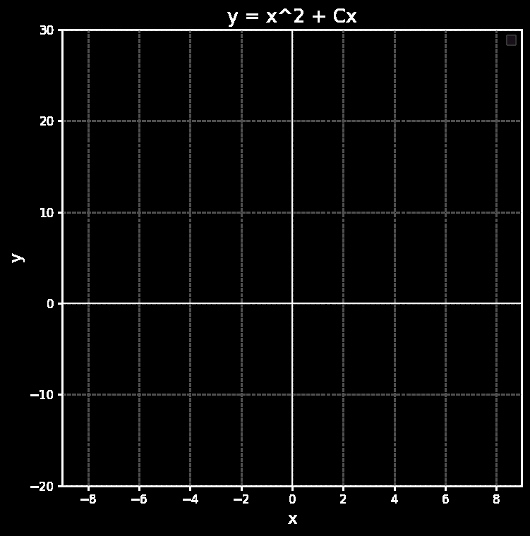
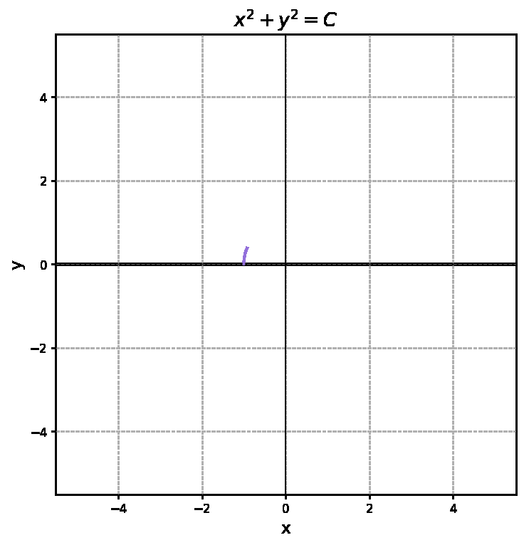
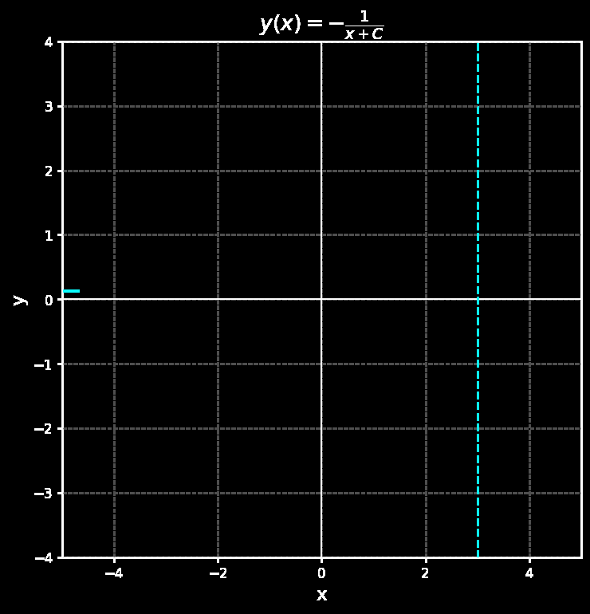

For
an integrating factor \( \mu = 1/x \) gives the general solution
The theorem's conditions hold only on \( D=\{x \neq 0\} \), yet every solution is smooth on all of \( \mathbb{R} \): \( D \subset D' \).


For
separation gives \( x^{2}+y^{2}=C \): half-circles, each defined only for \( |x|<\sqrt{C} \). Here \( D=\{y \neq 0\} \) but each solution lives on a bounded interval.
For
the conditions hold on all of \( \mathbb{R}^{2} \), yet the solutions
escape to infinity at \( x=-C \). With \( y(3)=1 \): \( y=-1/(x-4) \), defined only on \( (-\infty, 4) \).
